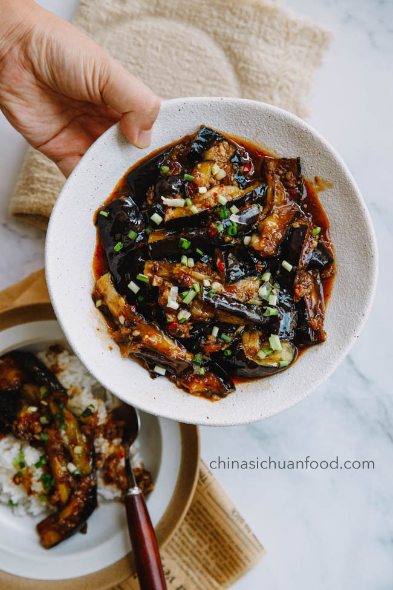

Yuxiang Eggplant
Description
This delectable Sichuan dish pairs fried-until-buttery eggplant slices
with a complex sauce of tangy, spicy fermented chilis and deep umami Zhenjiang
Vinegar (no, it does not in fact contain fish).
Ingredients
- About 3 medium Chinese eggplants
- 1 1/2 tbsp garlic
- 1 tbsp ginger
- 1 handful sliced scallion greens
- 4 tsp fine sugar
- 1 tsp light soy sauce
- 3/4 tsp potato starch mixed with 1 tbsp cold water
- 1 1/2 tbsp Sichuan Doubanjiang OR Sambal Oelek
- 1 tbsp Zhenjiang black vinegar
- 10 tbsp stock of choice
- 1 pinch salt
- Enough cooking oil to deep fry
Instructions
- Cut eggplants into batons about 7cm long. Mix well with salt,
set aside for about 30 minutes.
- Rinse eggplant and dry thoroughly while heating oil in a wok to 200 degrees
centigrade.
- Add eggplant to wok in moderate batches and fry until golden brown, about
3 minutes, then drain.
- Pour off all but 3 tbsp of oil from wok, then return to medium heat.
- Add bean paste or Sambal and fry untul oil is red. Add ginger and garlic,
and stir fry until fragrant.
- Pour in stock, sugar and soy sauce, and bring to a boil.
- Add eggplant and stir in carefully. Simmer for a minute or two.
- Add potato starch to thicken, then vinegar and half the scallion greens.
Stir for about 15 seconds.
- Plate with remaining scallion greens and Enjoy!